CURRENT RESEARCH
Plestiodon egregius evolutionary history and popualtion genetics
MS THESIS IN PARKINSON LAB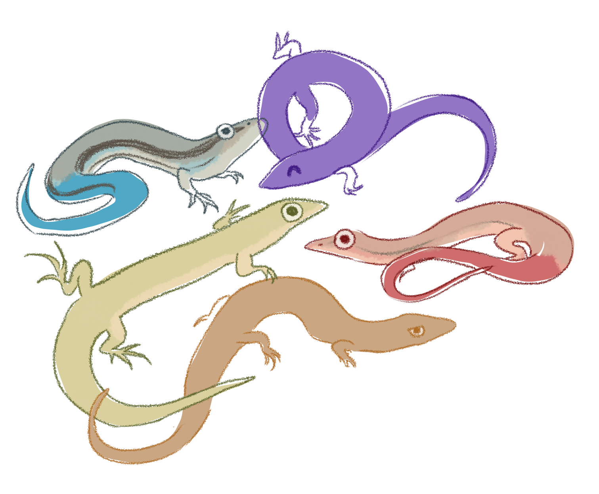
In isolated populations, genetic introgression and inbreeding are often precursors to local extinction. Characterizing the genetic 'health' of populations is critical to informed conservation management decisions as climates rapidly shift.
In the case of the Mole skink, there is a clear necessity for genetic information across its five subspecies. In this project, I am using genetic and genomic data to investigate population structure, connectivity, and genetic diveristy in this cryptic species. I am especially excited about this research's conservation implications, as two subspecies (P. e. insularis and P. e. egregius) under consideration for federal listing under the Endangered Species Act. In addition, I will be inferring phylogenetic relationships and validating the current subspecies delimitations using moden molecular methods.
PAST RESEARCH
Anuran distribution and richness across an altitudinal gradient in tropical montane forests
As Neotropical communities rapidly respond to environmental and anthropogenic pressures, measuring species richness and abundance across elevational gradients provides insight into the health of the ecosystem. Anuran surveys were conducted across four of seven Holdridge life zones in Monteverde, Costa Rica, to compare with previous data from 2019.

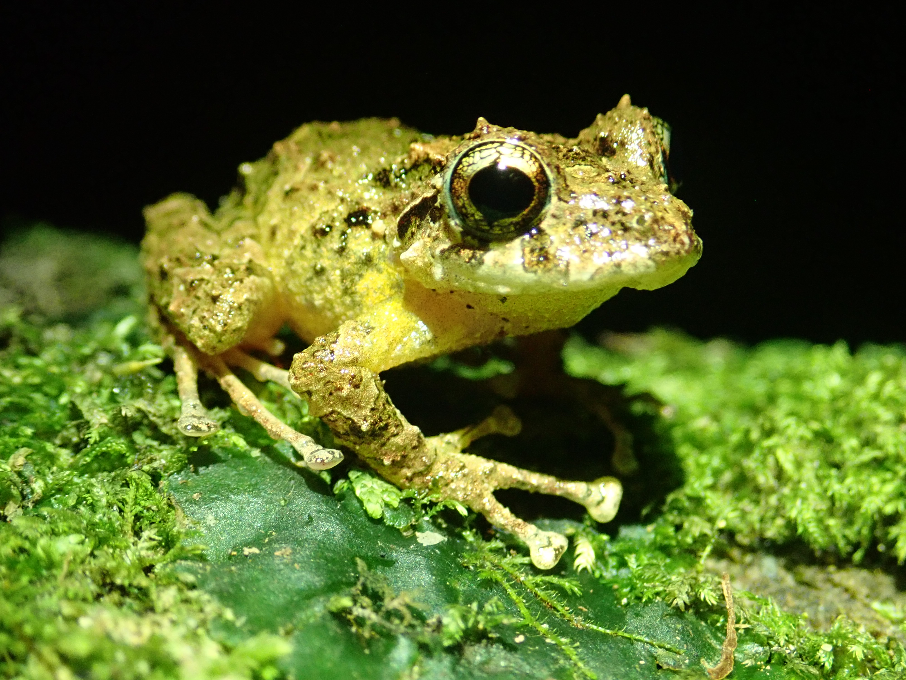
EDUCATION
MS Biological Sciences
BSc General Biology
Clemson University (2025-)
University of California, San Diego (2019-2023)
WORK EXPERIENCE
Introduction to Biology Lab (Non-majors), Clemson University
- Delivered lessons and led lab activities for 2 undergraduate lab sections (per semester)
- Provided feedback on student assessments
- Collaborated with peers and faculty to encourage team-teaching strategies
2025 Desert Tortoise Monitoring Program, The Great Basin Institute
- Planned logistics for assigned 12km transects with QGIS
- Recruited and trained 24 technicians in LDS sampling and data collection protocols
- Conducted weekly QA/QC on transect and telemetry wildlife data in Access database
- Completes monthly, quarterly and annual reports for project partners
2024 Desert Tortoise Monitoring Program, The Great Basin Institute
- Managed transect and radio telemetry wildlife data in Access database
- Assisted project manager in training 50+ technicians in data collection protocols
- Organized digital and physical data per USFWS Data Management Plan
Dudek, Inc.
- Surveyed habitat for federally endangered wildlife and plant species
- Collected data in harsh environments (6-10 mi/day)
- Collaborated with biologists to complete presence/absence and clearance surveys according to USFWS protocols
Great Ecology, Inc.
- Ensured construction crews were following safety and compliance concerning environmental resources
- Surveyed for Endangered Yuma’s Ridgeway rail during contruction hours
- Assisted state biologist with Endagered desert pupfish relocation on-site
Shurin Lab, University of California, San Diego
- Maintained open-air algae ponds (Nannochloropsis microalgae)
- Prepared metagenomic samples and conducted gravimetric analyses
FAIR Data Informatics Lab, UC San Diego Health
- Managed online database of funding opportunities for NIDDK researchers
- Designed and curated newsletters and Twitter campaigns for FDI Lab tools
PUBLICATIONS
Corcoran AA, Alvarez MS, Cornell T, Echenique-Subiabre I, Gerber J, Getto S, Jebali A, Martinez H, Nalley JO, O’Kelly CJ, Ryan A, Shurin JB. Long-Term Outdoor Cultivation of Nannochloropsis in California, Hawaii, and New Mexico. Data. 2024; 9(11):126. https://doi.org/10.3390/data9110126
Moran MD, Aspinall V, Fuentes A, Price AJ, Burks R, England CD, Reifeiss J, Gutierrez Vasquez J, McClure K, Mabry M, Cornell T, Chaves D, Gallo Gutiérrez S, Torres D, Araya F. “The Frog Community of Monteverde 38 Years Post-chytrid Invasion: Loss, Recovery, and Radical Reorganization,” Submitted for publication.
OTHER WORKS
Cornell, T, FJ Joyce, & F Chinchilla. Anuran distribution and richness across an altitudinal gradient in montane forests – an updated survey. The Saltman Quarterly Undergraduate Research Journal. 2024; 21: 43-48.
PRESENTATIONS
Oral
- “Conservation Genetics of the Mole Skink (Plestiodon egregius),” Southeast Association of Fish and Wildlife Agencies, Nashville, TN, October 2026.
- “Range-Wide Genomic Structure and Conservation Implications in the Mole Skink (Plestiodon egregius),” Joint Meeting of Ichthyologists and Herpetologists, New Orleans, LA, July 2026.
- “Monitoring Mojave Desert Tortoise,” International Herpetological Society, Knoxville, TN, June 2024.
Poster
- “Anuran Distribution and Richness Across an Altitudinal Gradient in Montane Forests,” The Wildlife Society Western Section, Sonoma, CA, February 2024.
GRANTS AND AWARDS
- Carl Gans Travelling Fellowship, $800 (March 2026)
- Orianne Society for Reptile and Amphibian Conservation in the Southeast, $2500 (December 2025)
- Clemson Univeristy Science Advisory Board Grant-in-Aid, $1000 (October 2025)
- IHS Junior Herpetologists Award, $1000+ (March 2024)
- The Wildlife Society - SoCal Chapter Travel Grant, $1000 (December 2023)
- The Wildlife Society - Western Section Travel Grant, $500 (November 2023)
PROFESSIONAL DEVELOPMENT
- “Maintaining Effective Communication,” GRAD 360, Clemson University, 29 January 2026.
- “Understanding Critical Concepts of Grant Writing,” GRAD 360, Clemson University, 27 January 2026.
- Coding for Biology Workshop, Genomics and Bioinformatics Facility, Clemson University, 16-17 December 2025.
- “Mentoring for Research to Practice Translation,” GRAD 360, Clemson University, 1 December 2025.
- “You Can’t Research Without Rules,” GRAD 360, Clemson University, 16 October 2025.
- Wet Lab Genomics Workshop, Genomics and Bioinformatics Facility, Clemson University, 14 October 2025.
GALLERY
During my undergraduate I served as an Illustrator for The Saltman Quarterly, and undergraduate research journal. I still enjoy art when I have the time.
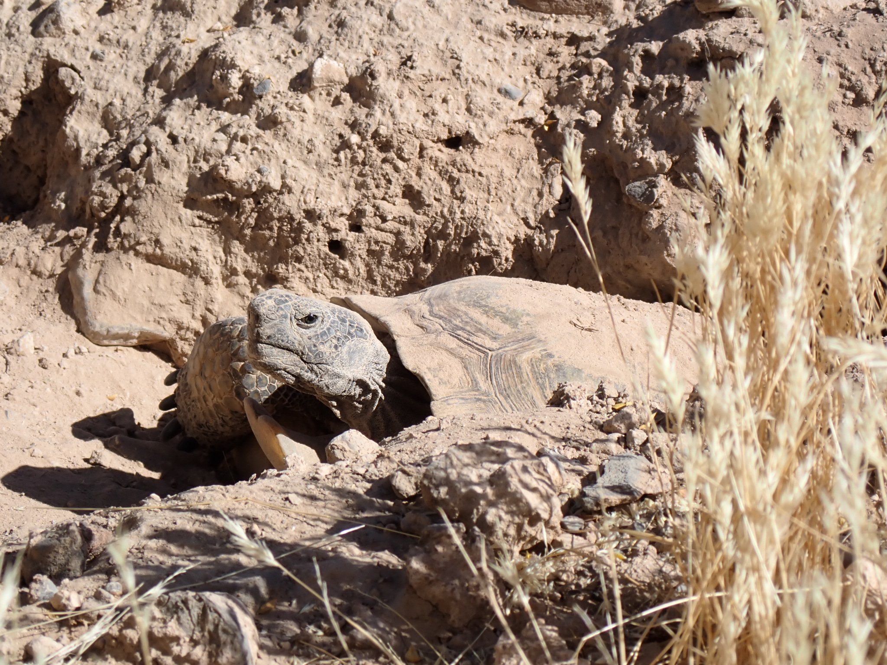
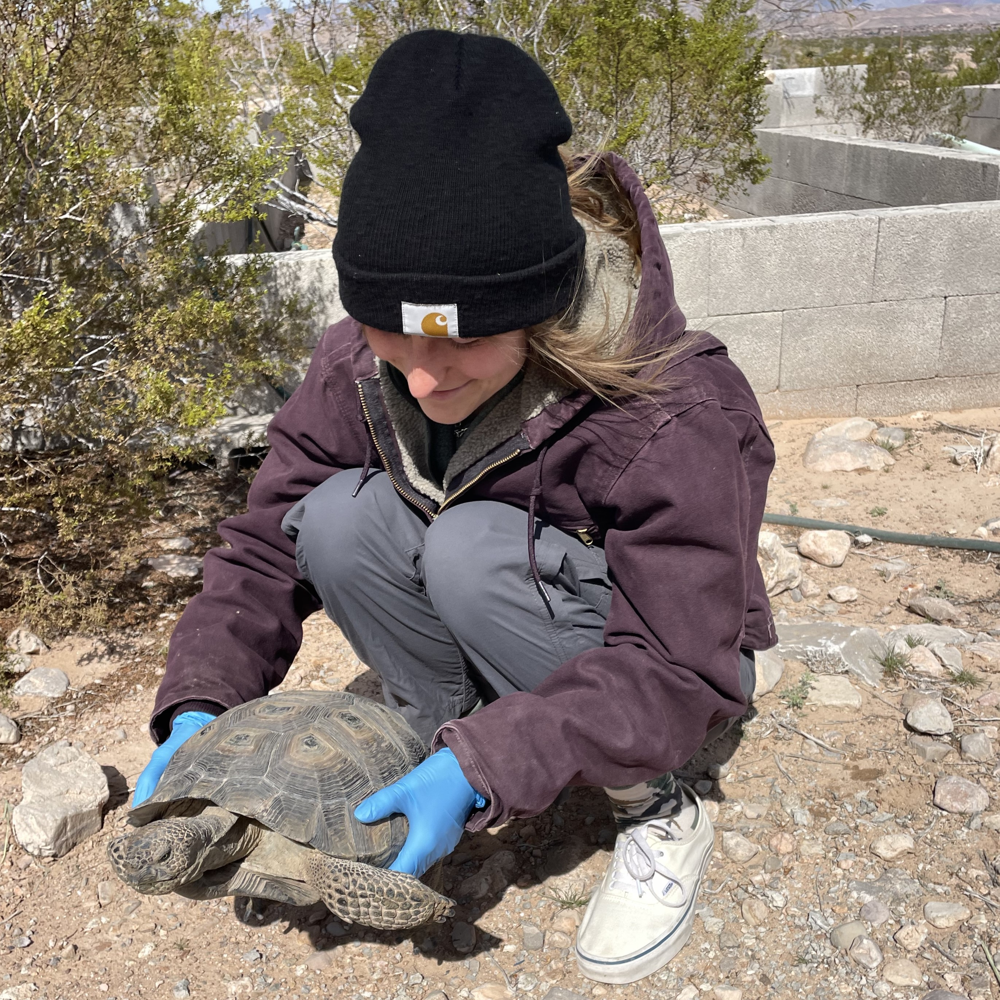
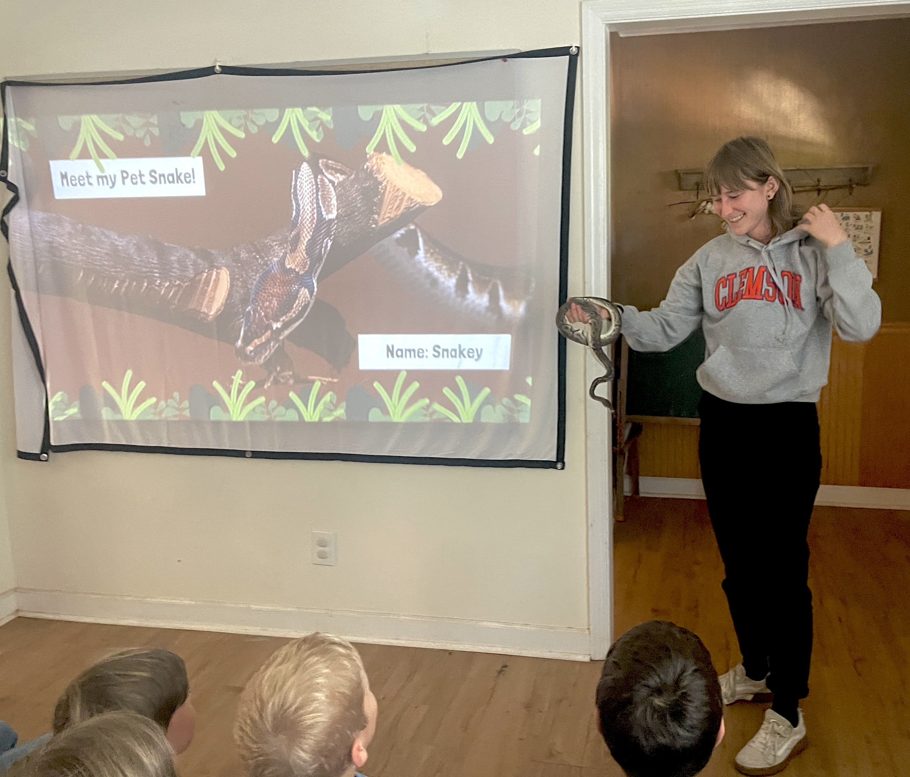
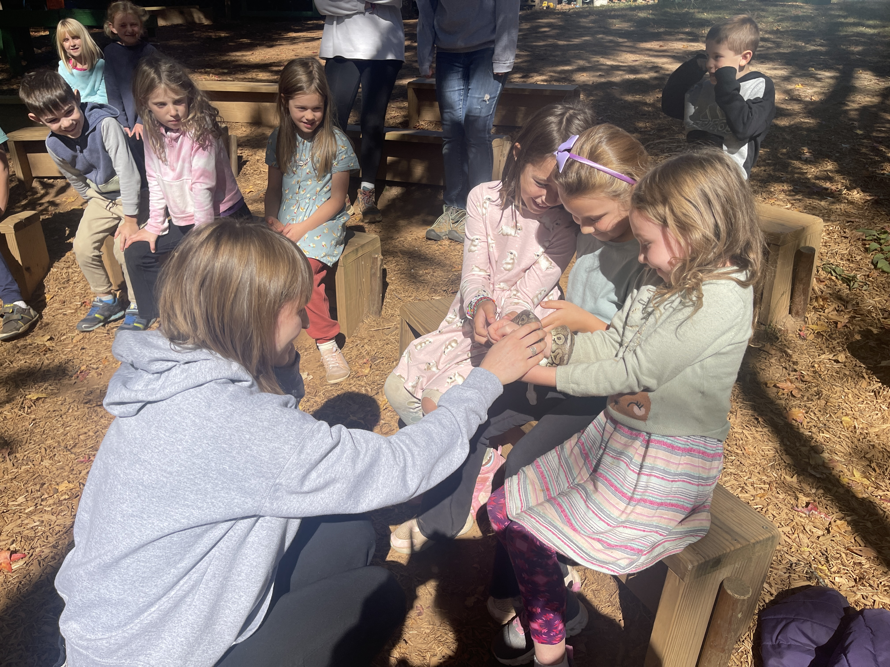
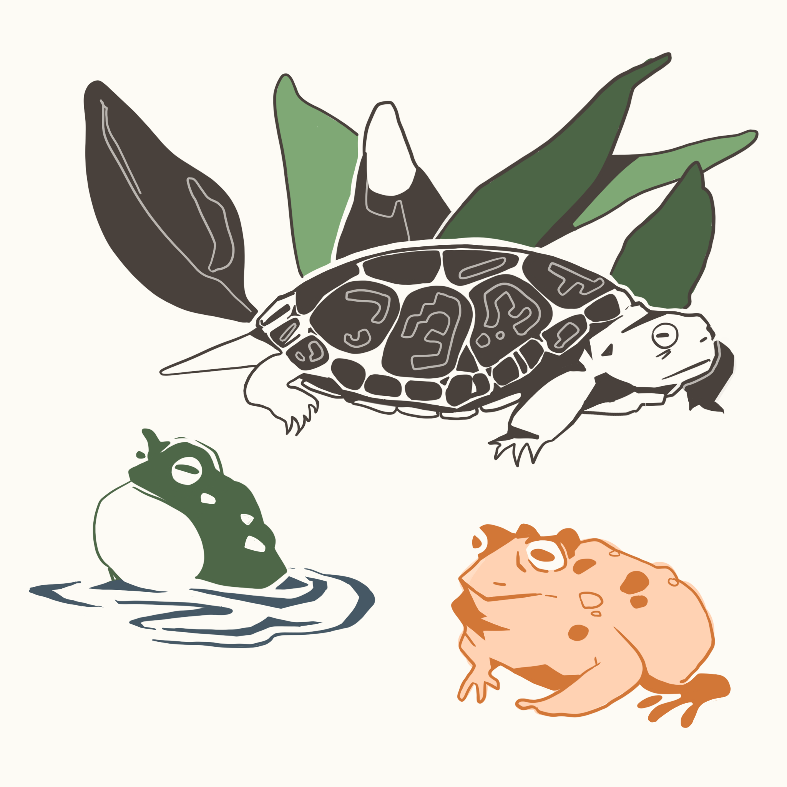
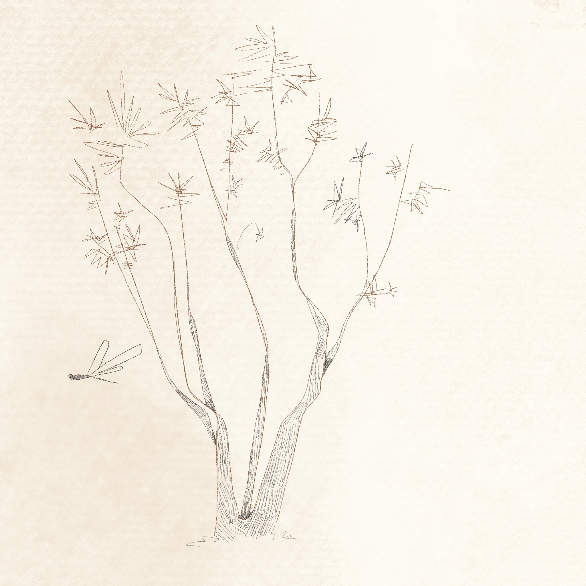
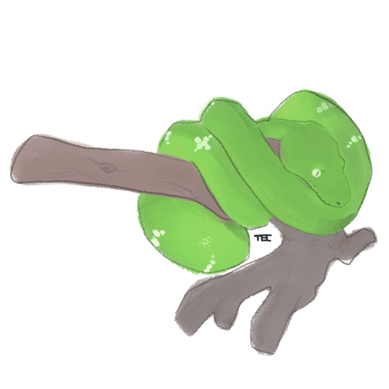
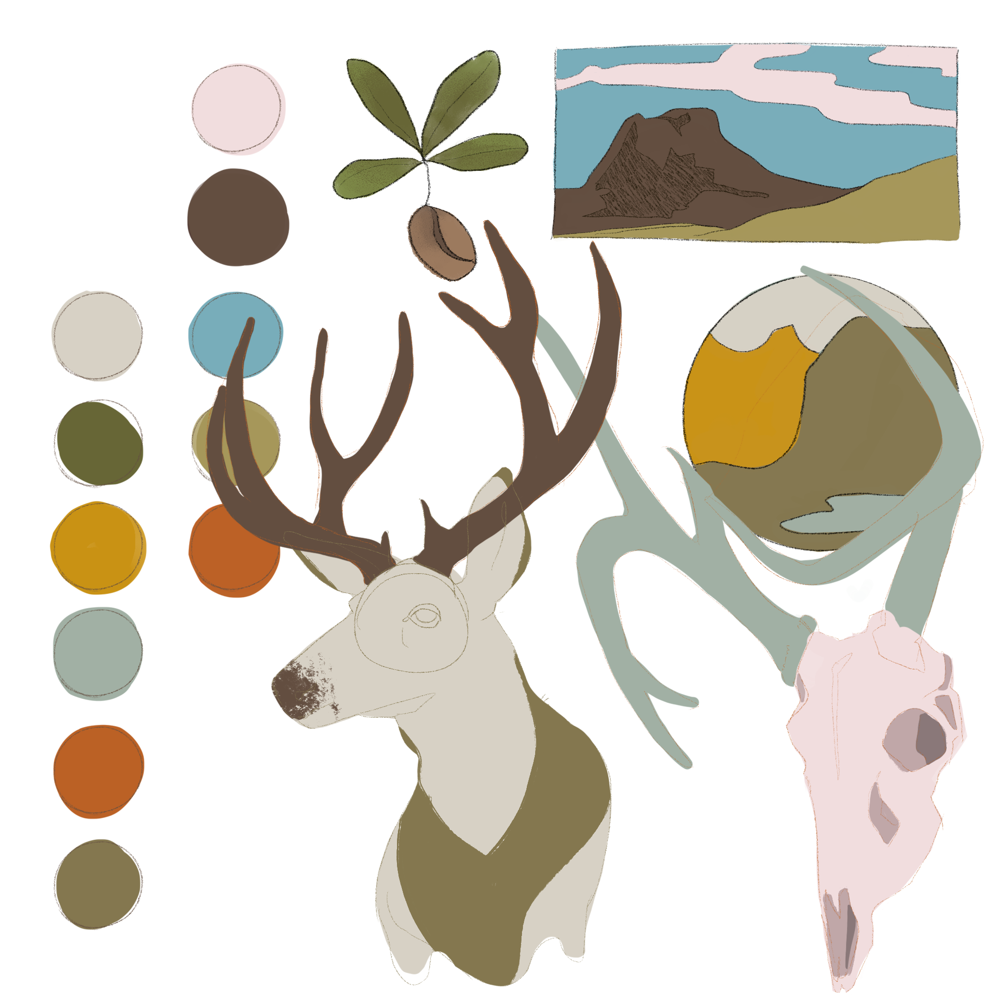
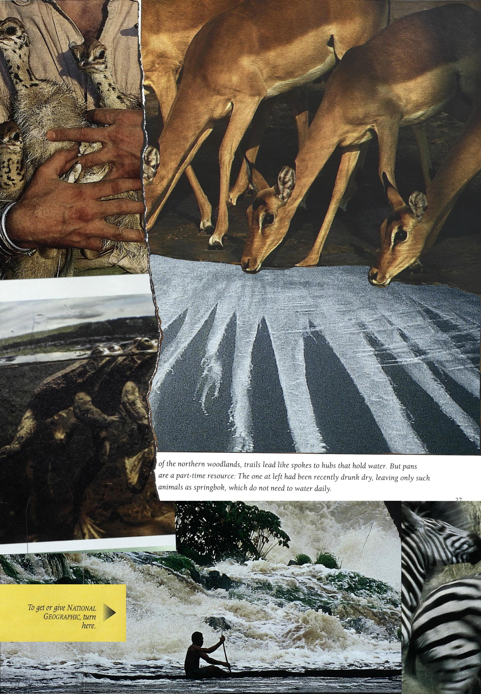